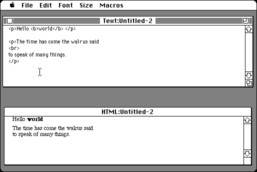

Download
Texplore1.6.5.zip (139K) Texplore 1.6.5 repackaged into a zipped hfs disk image and checksum file. The disk image can be mounted with Mini vMac.
Texplore1.6.5.sit.hqx (168K) Texplore 1.6.5 in the original format.
copyright: Greg Jalbert
mod date: Dec 10, 2003
license: shareware
official url :
Imaja: Texplore
A simple text editor with macros and an html view. Also some other assorted features.

If you find these downloads useful, please consider helping the Gryphel Project, which hosts them.
Here are the md5 checksums for the downloads, signed with Gryphel Key 5:
--------- GRY SIGNED TEXT --------- 1d1ab3b2792eaeeed0ab8c63a6d383f3 Texplore1.6.5.zip fe1685deca2de543edaecef259ac9cd9 Texplore1.6.5.sit.hqx ------- BEGIN GRY SIGNATURE ------- Gry/4Xa8CFcUzxdN/CMpZ+O4sEa/qdvgPbMXcp1clTXqn1TMSNKWrwJG7pk/I72J 1J0xmW/hEPYZP1h5FtVUi2XKrYKcoqRnPmi9XPzTzmOJq2WOPugXd1ybsOB9Y5g8 pavTeszSkB03LxRLiDTUkc9fA2Ela3EdQ2Wy4THuj3NXl8InT7/dPg4UnxZuhGLk -------- END GRY SIGNATURE --------